Keys = your pick (the icon acts). Each look has a SECURE MOMENT - it plays when a shop is secured while the map is open. Feel it in the live page; below it is frozen, frame by frame.
THE SECURE MOMENT · one shop, frame by frame
1 · BANNER
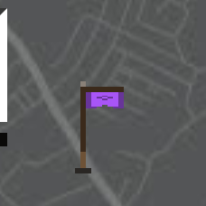
0 ms
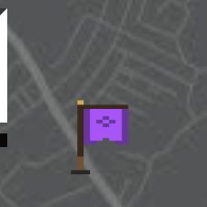
100 ms
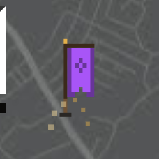
220 ms
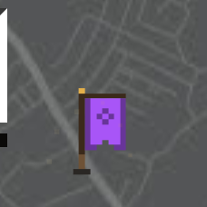
380 ms
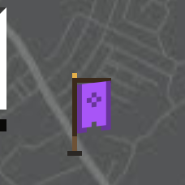
600 ms
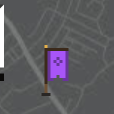
1400 ms
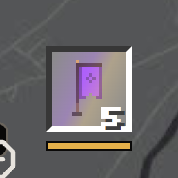
bubble goes full
2 · CHEST
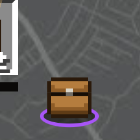
0 ms
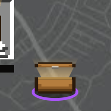
100 ms
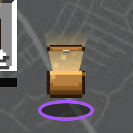
220 ms
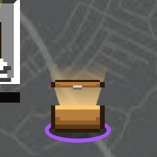
380 ms600 ms1400 ms
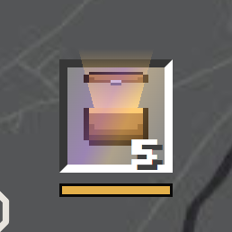
bubble goes full
3 · BEACON
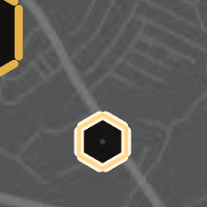
0 ms
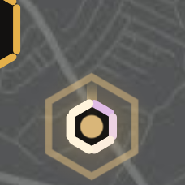
100 ms
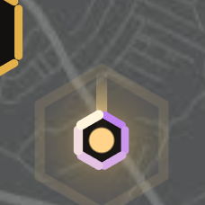
220 ms
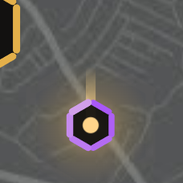
380 ms
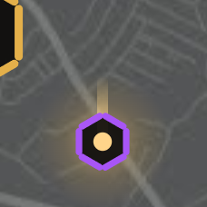
600 ms1400 ms
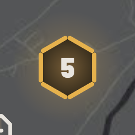
bubble goes full
PC · 1440
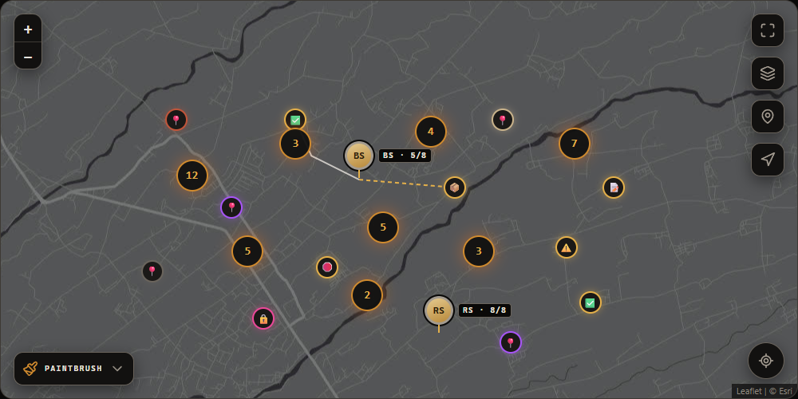
TODAY gold number, gold ring and an orange glow on every bubble; emoji pins
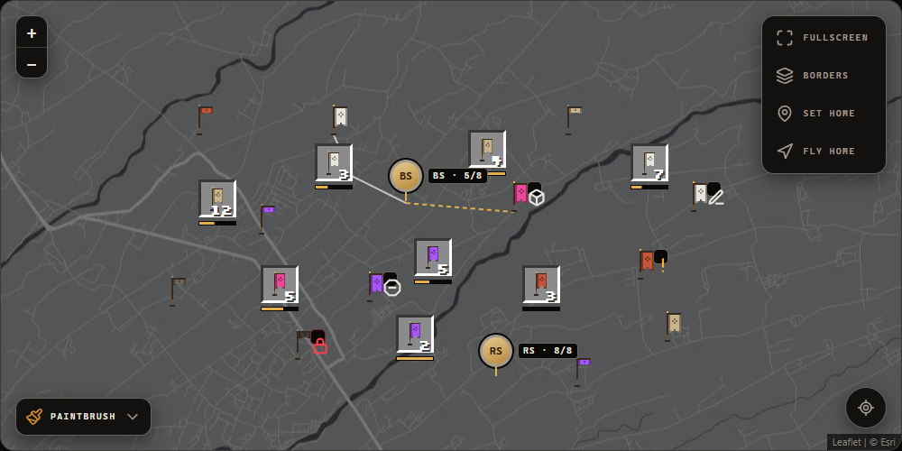
1 · BANNER rolled up = not visited; secured = it unrolls in the salesman's colour
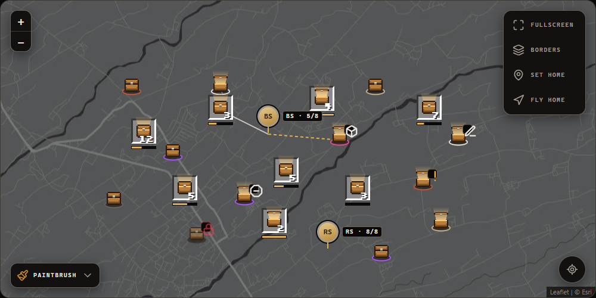
2 · CHEST closed = not visited; secured = the lid pops open, light inside
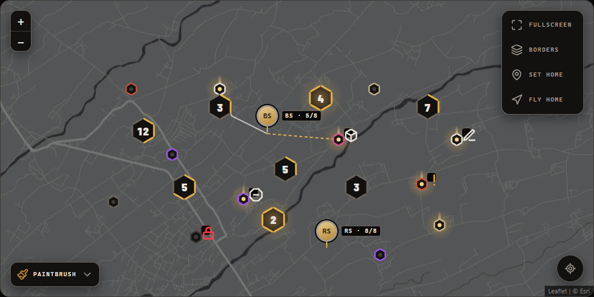
3 · BEACON dark hex = not visited; secured = it switches on, light pillar
PHONE · 390 (full map)
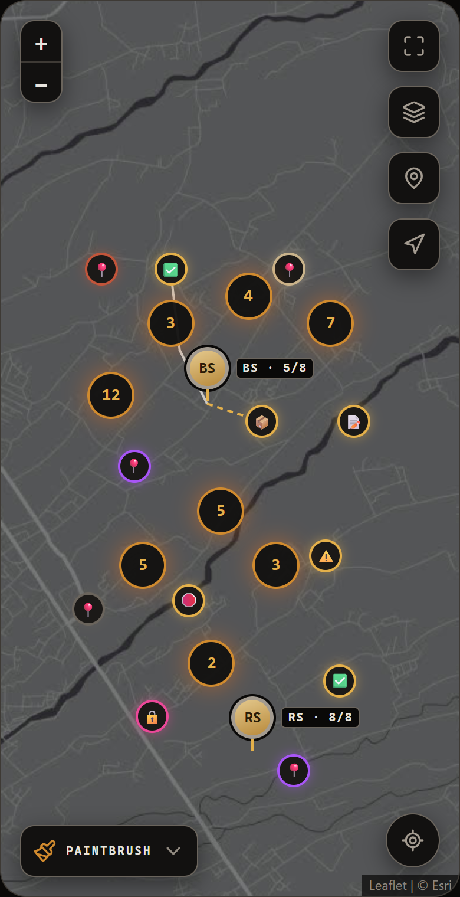
TODAY gold number, gold ring and an orange glow on every bubble; emoji pins
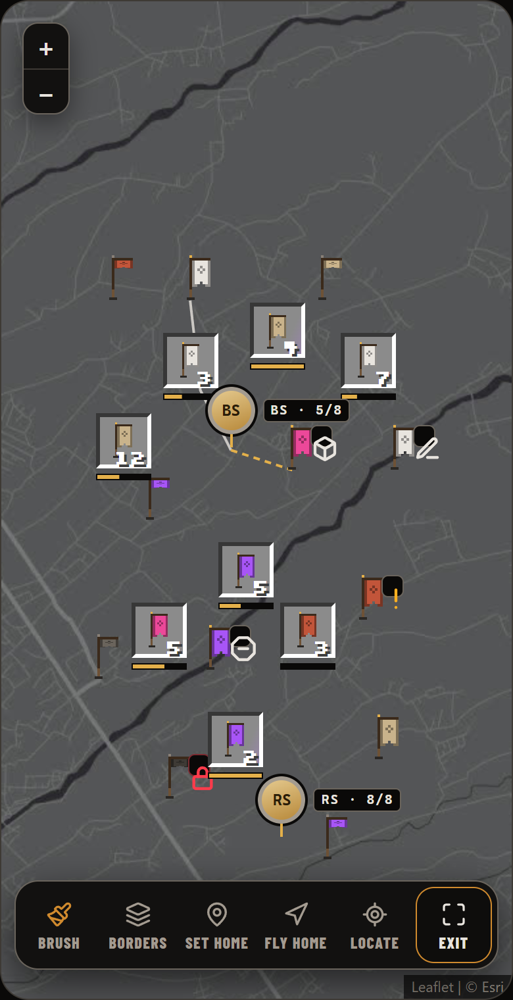
1 · BANNER rolled up = not visited; secured = it unrolls in the salesman's colour2 · CHEST closed = not visited; secured = the lid pops open, light inside
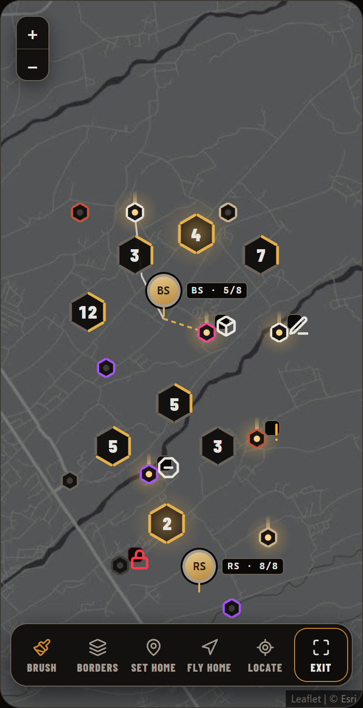
3 · BEACON dark hex = not visited; secured = it switches on, light pillar